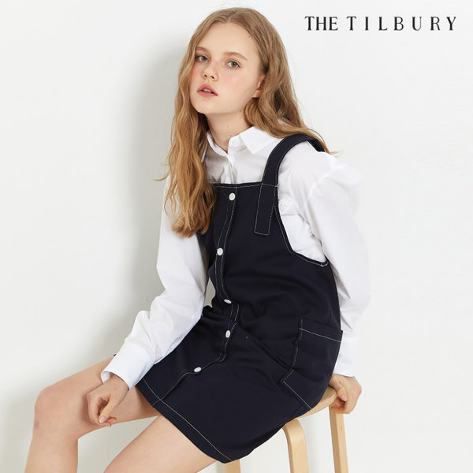
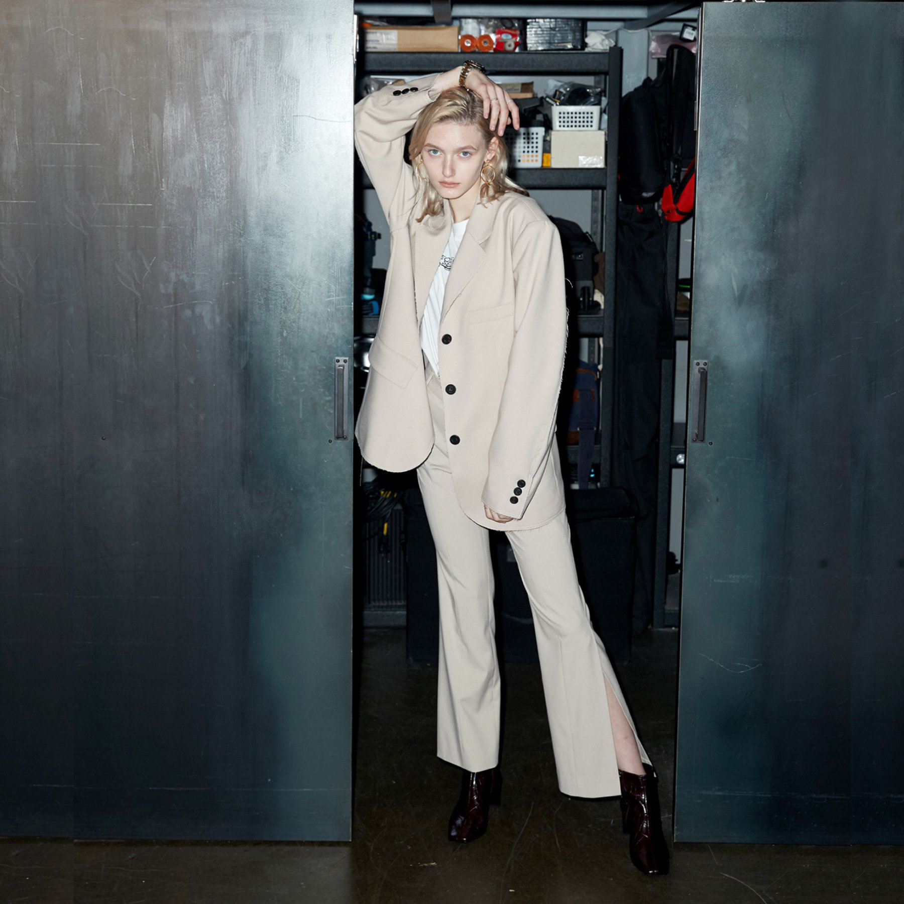
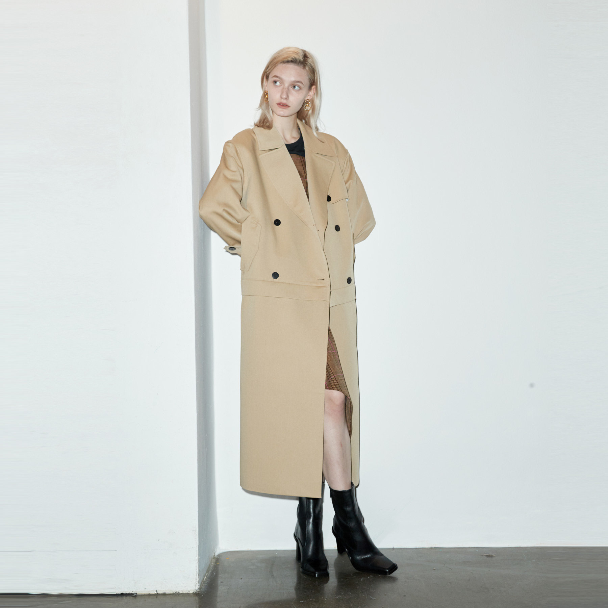

Spring

봄의 첫 번째 코디 아이템은 '서스펜더 원피스', 일명 '멜빵 원피스'이다.
바지를 고정하기 위해 사용된 멜빵이 패션에 접목되어 오늘날의 '서스펜더 스타일이 탄생했다.

두 번째, 매일 아침 코디로 골머리를 앓는 커리어 우먼에겐 수트 셋업을 추천한다.
첫 구매라면 블랙이나 네이비 컬러의 스탠다드 핏 수트 셋업을 도전하길 바란다.

세 번째, 봄에 빠질 수 없는 '트렌치코트'는 입는 순간 스타일리시해진다.
트렌치코트에 포인트를 더하고 싶다면, 선글라스를 구매하는 것도 추천한다.